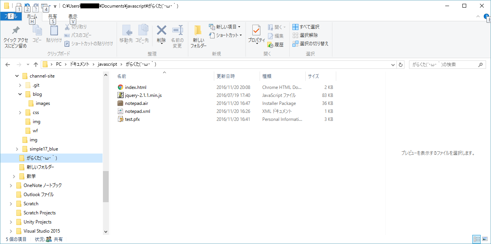
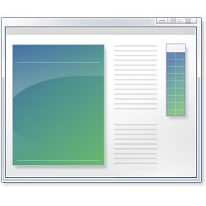
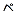
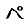
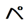
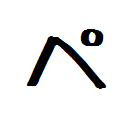

いけちゃんが暇つぶし程度に書くブログ
HTMLでデスクトップアプリを作成する一連の流れをまとめた
ということで、今日、Adobe Airを使って簡単なメモアプリ(クリップボード)を作ってみましたので、その過程を紹介します。
意外と解説してるサイト少ないので書きました。
今回作ったのは、このようなものになります。
See the Pen vygbNa by takumi (@takumi) on CodePen.
これをデスクトップアプリにしていきます。
HTMLを書く
まずはメインのHTMLの作成です。Adobe Airでは、ローカルファイルにアクセスするなど高度なことができますが、これは練習なので簡単なものにしました。
上の埋め込みコードからコピペできます。
XMLの作成
ウィンドウのサイズなどの設定は、xmlファイルに記述します。
＜アプリ名＞.xml
というファイルを作成して、以下のコードをコピペしてください。
<?xml version="1.0" encoding="utf-8" ?>
<application xmlns="http://ns.adobe.com/air/application/1.5" minimumPatchLevel="0">
<id>index.html</id>
<version>1.0</version>
<filename>＜アプリ名＞</filename>
<initialWindow>
<content>index.html</content>
<visible>true</visible>
<width>380</width>
<height>260</height>
</initialWindow>
</application>
尚、XMLの中身はAdobe Air SDKのバージョンによって変わります。
デバッグ
HTMLとXMLを作成したら、デバッグを行えます。
※この記事は、SDKのインストール・環境変数の設定が住んでいるものとして書いています。
そんなのしてないよ！って方はググってください。
コマンドラインでこれを実行してください。
adl ＜アプリ名＞.xml
するとアプリが立ち上がります。
配布
配布するためにインストーラを作るのですが、そのために"証明書"を作らなければなりません。
機関から発行してもらうのですが、いちいちそんなことしてられないので、(証明されていない)証明書を作ります。
コマンドラインでこれを実行してください。
adt -certificate -cn test 1024-RSA test.pfx pass
test.pfxというファイルができましたか？
次はいよいよインストーラの作成です。
.airという、Airアプリのインストーラ形式のファイルを作ります。
コマンドはこんな感じです。
adt -package -storetype pkcs12 -keystore test.pfx -storepass pass <インストーラ名>.air <アプリ名>.xml index.html <その他同梱ファイル(js,css,画像など)> <その他同梱ファイル(js,css,画像など)>
ここでは、インストーラ名を"notepad.air"、アプリ名を"notepad.xml"とします。その他同梱ファイルというのは、ここではjquery-2.1.1.min.jsのみです。
この場合、コマンドは
adt -package -storetype pkcs12 -keystore test.pfx -storepass pass notepad.air notepad.xml index.html jquery-2.1.1.min.js
となります。
実行
notepad.airというファイルができましたか？
これをダブルクリックしてインストールします。

アイコン
インストールはできましたが、

こんな味気ないアイコンになったと思います。
せっかくなのでオリジナルのアイコンに変えてみます。
まず、アイコンの画像を4つ用意します。
16.png 32.png 48.png 128.png
    センスが...w
サイズはそれぞれ 16x16,32x32,48x48(64x64じゃないので注意！),128x128 となります。
index.htmlなどがあるファイルにぶち込んでください。
コマンドがちょっと変わります。
adt -package -storetype pkcs12 -keystore test.pfx -storepass pass notepad.air notepad.xml index.html jquery-2.1.1.min.js 16.png 32.png 48.png 128.png
インストールして実行して、アイコンが適応されていたら成功。